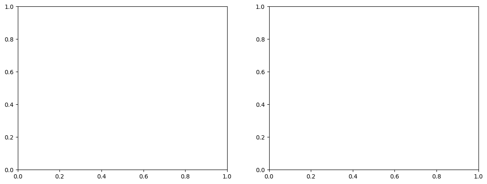

RNN#
# 📦 LIBRERÍAS
import numpy as np
import pandas as pd
import tensorflow as tf
import matplotlib.pyplot as plt
import seaborn as sns
import warnings
warnings.filterwarnings('ignore')
from sklearn.model_selection import train_test_split
from sklearn.preprocessing import StandardScaler
from sklearn.impute import SimpleImputer
from sklearn.metrics import mean_absolute_error, mean_squared_error, r2_score, confusion_matrix
from tensorflow.keras.models import Sequential
from tensorflow.keras.layers import SimpleRNN, Dense
# 📂 CARGAR DATOS
ruta = r'C:\docs\DOCTORADO\Machine_Learning\tornados.csv'
df = pd.read_csv(ruta)
---------------------------------------------------------------------------
FileNotFoundError Traceback (most recent call last)
Cell In[1], line 20
18 # 📂 CARGAR DATOS
19 ruta = r'C:\docs\DOCTORADO\Machine_Learning\tornados.csv'
---> 20 df = pd.read_csv(ruta)
File ~\miniconda3\envs\ml_venv\lib\site-packages\pandas\io\parsers\readers.py:948, in read_csv(filepath_or_buffer, sep, delimiter, header, names, index_col, usecols, dtype, engine, converters, true_values, false_values, skipinitialspace, skiprows, skipfooter, nrows, na_values, keep_default_na, na_filter, verbose, skip_blank_lines, parse_dates, infer_datetime_format, keep_date_col, date_parser, date_format, dayfirst, cache_dates, iterator, chunksize, compression, thousands, decimal, lineterminator, quotechar, quoting, doublequote, escapechar, comment, encoding, encoding_errors, dialect, on_bad_lines, delim_whitespace, low_memory, memory_map, float_precision, storage_options, dtype_backend)
935 kwds_defaults = _refine_defaults_read(
936 dialect,
937 delimiter,
(...)
944 dtype_backend=dtype_backend,
945 )
946 kwds.update(kwds_defaults)
--> 948 return _read(filepath_or_buffer, kwds)
File ~\miniconda3\envs\ml_venv\lib\site-packages\pandas\io\parsers\readers.py:611, in _read(filepath_or_buffer, kwds)
608 _validate_names(kwds.get("names", None))
610 # Create the parser.
--> 611 parser = TextFileReader(filepath_or_buffer, **kwds)
613 if chunksize or iterator:
614 return parser
File ~\miniconda3\envs\ml_venv\lib\site-packages\pandas\io\parsers\readers.py:1448, in TextFileReader.__init__(self, f, engine, **kwds)
1445 self.options["has_index_names"] = kwds["has_index_names"]
1447 self.handles: IOHandles | None = None
-> 1448 self._engine = self._make_engine(f, self.engine)
File ~\miniconda3\envs\ml_venv\lib\site-packages\pandas\io\parsers\readers.py:1705, in TextFileReader._make_engine(self, f, engine)
1703 if "b" not in mode:
1704 mode += "b"
-> 1705 self.handles = get_handle(
1706 f,
1707 mode,
1708 encoding=self.options.get("encoding", None),
1709 compression=self.options.get("compression", None),
1710 memory_map=self.options.get("memory_map", False),
1711 is_text=is_text,
1712 errors=self.options.get("encoding_errors", "strict"),
1713 storage_options=self.options.get("storage_options", None),
1714 )
1715 assert self.handles is not None
1716 f = self.handles.handle
File ~\miniconda3\envs\ml_venv\lib\site-packages\pandas\io\common.py:863, in get_handle(path_or_buf, mode, encoding, compression, memory_map, is_text, errors, storage_options)
858 elif isinstance(handle, str):
859 # Check whether the filename is to be opened in binary mode.
860 # Binary mode does not support 'encoding' and 'newline'.
861 if ioargs.encoding and "b" not in ioargs.mode:
862 # Encoding
--> 863 handle = open(
864 handle,
865 ioargs.mode,
866 encoding=ioargs.encoding,
867 errors=errors,
868 newline="",
869 )
870 else:
871 # Binary mode
872 handle = open(handle, ioargs.mode)
FileNotFoundError: [Errno 2] No such file or directory: 'C:\\docs\\DOCTORADO\\Machine_Learning\\tornados.csv'
# 🧹 PREPROCESAMIENTO COMP
df_rnn = df.copy()
# Eliminar columnas no útiles o que están relacionadas con la variable objetivo
df_rnn.drop(['om', 'date', 'time', 'datetime_utc', 'stf', 'f1', 'f2', 'f3', 'f4', 'fat'], axis=1, inplace=True)
# Eliminar filas sin 'inj'
df_rnn.dropna(subset=['inj'], inplace=True)
# Convertir columnas a tipo adecuado
df_rnn['fc'] = df_rnn['fc'].astype(int)
# Codificar variables categóricas
df_rnn = pd.get_dummies(df_rnn, columns=['st', 'tz'], drop_first=True)
# Separar variables
X = df_rnn.drop('inj', axis=1)
y = df_rnn['inj']
# Dividir en entrenamiento y prueba
X_train, X_test, y_train, y_test = train_test_split(X, y, test_size=0.3, random_state=42)
---------------------------------------------------------------------------
NameError Traceback (most recent call last)
Cell In[2], line 2
1 # 🧹 PREPROCESAMIENTO COMP
----> 2 df_rnn = df.copy()
4 # Eliminar columnas no útiles o que están relacionadas con la variable objetivo
5 df_rnn.drop(['om', 'date', 'time', 'datetime_utc', 'stf', 'f1', 'f2', 'f3', 'f4', 'fat'], axis=1, inplace=True)
NameError: name 'df' is not defined
# Imputación de NaN con la media
imputer = SimpleImputer(strategy='mean')
X_train = imputer.fit_transform(X_train)
X_test = imputer.transform(X_test)
# Escalar
scaler = StandardScaler()
X_train_scaled = scaler.fit_transform(X_train)
X_test_scaled = scaler.transform(X_test)
# Reshape para RNN
X_train_rnn = X_train_scaled.reshape((X_train_scaled.shape[0], 1, X_train_scaled.shape[1]))
X_test_rnn = X_test_scaled.reshape((X_test_scaled.shape[0], 1, X_test_scaled.shape[1]))
---------------------------------------------------------------------------
NameError Traceback (most recent call last)
Cell In[3], line 3
1 # Imputación de NaN con la media
2 imputer = SimpleImputer(strategy='mean')
----> 3 X_train = imputer.fit_transform(X_train)
4 X_test = imputer.transform(X_test)
6 # Escalar
NameError: name 'X_train' is not defined
# 🧠 MODELO RNN
model_rnn = Sequential()
model_rnn.add(SimpleRNN(32, activation='relu', input_shape=(1, X_train_scaled.shape[1])))
model_rnn.add(Dense(1))
model_rnn.compile(optimizer='adam', loss='mse')
---------------------------------------------------------------------------
NameError Traceback (most recent call last)
Cell In[4], line 3
1 # 🧠 MODELO RNN
2 model_rnn = Sequential()
----> 3 model_rnn.add(SimpleRNN(32, activation='relu', input_shape=(1, X_train_scaled.shape[1])))
4 model_rnn.add(Dense(1))
5 model_rnn.compile(optimizer='adam', loss='mse')
NameError: name 'X_train_scaled' is not defined
import time
start_rnn = time.time()
# ENTRENAR
model_rnn.fit(X_train_rnn, y_train, epochs=10, batch_size=32, verbose=1)
end_rnn = time.time()
# Guardar duración
tiempo_rnn = end_rnn - start_rnn
---------------------------------------------------------------------------
NameError Traceback (most recent call last)
Cell In[5], line 5
2 start_rnn = time.time()
4 # ENTRENAR
----> 5 model_rnn.fit(X_train_rnn, y_train, epochs=10, batch_size=32, verbose=1)
7 end_rnn = time.time()
9 # Guardar duración
NameError: name 'X_train_rnn' is not defined
# 📈 PREDICCIONES Y MÉTRICAS
y_pred_rnn = model_rnn.predict(X_test_rnn).flatten()
# Alinear índices si es necesario
y_test = y_test.reset_index(drop=True)
mae_rnn = mean_absolute_error(y_test, y_pred_rnn)
rmse_rnn = np.sqrt(mean_squared_error(y_test, y_pred_rnn))
r2_rnn = r2_score(y_test, y_pred_rnn)
print("MAE:", mae_rnn)
print("RMSE:", rmse_rnn)
print("R2:", r2_rnn)
---------------------------------------------------------------------------
NameError Traceback (most recent call last)
Cell In[6], line 2
1 # 📈 PREDICCIONES Y MÉTRICAS
----> 2 y_pred_rnn = model_rnn.predict(X_test_rnn).flatten()
4 # Alinear índices si es necesario
5 y_test = y_test.reset_index(drop=True)
NameError: name 'X_test_rnn' is not defined
resultados_rnn = pd.DataFrame({
'Modelo': ['RNN simple (1 capa, relu)'],
'MAE': [round(mae_rnn, 2)],
'RMSE': [round(rmse_rnn, 2)],
'R²': [round(r2_rnn, 4)],
'CPU time (s)': [round(tiempo_rnn, 4)]
})
# Mostrar resultados
display(resultados_rnn)
# Guardar por si necesitas usarlo después
resultados_rnn.to_csv("resultados_rnn", index=False)
---------------------------------------------------------------------------
NameError Traceback (most recent call last)
Cell In[7], line 3
1 resultados_rnn = pd.DataFrame({
2 'Modelo': ['RNN simple (1 capa, relu)'],
----> 3 'MAE': [round(mae_rnn, 2)],
4 'RMSE': [round(rmse_rnn, 2)],
5 'R²': [round(r2_rnn, 4)],
6 'CPU time (s)': [round(tiempo_rnn, 4)]
7 })
9 # Mostrar resultados
10 display(resultados_rnn)
NameError: name 'mae_rnn' is not defined
import matplotlib.pyplot as plt
# Crear figura con 2 subplots en fila
fig, axes = plt.subplots(1, 2, figsize=(14, 5))
# 🔹 Gráfico 1: Scatter Pred vs Real
axes[0].scatter(y_test, y_pred_rnn, alpha=0.5)
axes[0].plot([y_test.min(), y_test.max()], [y_test.min(), y_test.max()], 'r--')
axes[0].set_xlabel('Valores reales (inj)')
axes[0].set_ylabel('Predicciones (inj)')
axes[0].set_title('Predicciones vs. Valores reales (RNN Simple)')
axes[0].grid(True)
# 🔹 Gráfico 2: Línea Pred vs Real
axes[1].plot(y_test.values, label='Real', marker='o')
axes[1].plot(y_pred_rnn, label='Predicho', marker='x')
axes[1].set_title("🔁 RNN Simple: Predicción vs. Real")
axes[1].set_xlabel("Índice de muestra")
axes[1].set_ylabel("Heridos (inj)")
axes[1].legend()
axes[1].grid(True)
# Ajustar diseño
plt.tight_layout()
plt.show()
---------------------------------------------------------------------------
NameError Traceback (most recent call last)
Cell In[8], line 7
4 fig, axes = plt.subplots(1, 2, figsize=(14, 5))
6 # 🔹 Gráfico 1: Scatter Pred vs Real
----> 7 axes[0].scatter(y_test, y_pred_rnn, alpha=0.5)
8 axes[0].plot([y_test.min(), y_test.max()], [y_test.min(), y_test.max()], 'r--')
9 axes[0].set_xlabel('Valores reales (inj)')
NameError: name 'y_test' is not defined

Optimización del Modelo RNN con 200 épocas#
from tensorflow.keras.callbacks import EarlyStopping
# Crear el modelo RNN
model_rnn = Sequential([
SimpleRNN(64, activation='tanh', input_shape=(X_train_rnn.shape[1], X_train_rnn.shape[2])),
Dense(32, activation='relu'),
Dense(1) # salida para regresión
])
model_rnn.compile(optimizer='adam', loss='mse')
# Definir EarlyStopping
early_stop = EarlyStopping(
monitor='val_loss',
patience=10, # si no mejora por 10 épocas seguidas, se detiene
restore_best_weights=True
)
import time
start_rnn = time.time()
# Entrenar con validación
history_rnn = model_rnn.fit(
X_train_rnn,
y_train,
validation_split=0.2, # usa el 20% del entrenamiento para validar
epochs=200,
batch_size=32,
callbacks=[early_stop],
verbose=1
)
end_rnn = time.time()
# Guardar duración
tiempo_rnn_opt = end_rnn - start_rnn
---------------------------------------------------------------------------
NameError Traceback (most recent call last)
Cell In[9], line 5
1 from tensorflow.keras.callbacks import EarlyStopping
3 # Crear el modelo RNN
4 model_rnn = Sequential([
----> 5 SimpleRNN(64, activation='tanh', input_shape=(X_train_rnn.shape[1], X_train_rnn.shape[2])),
6 Dense(32, activation='relu'),
7 Dense(1) # salida para regresión
8 ])
10 model_rnn.compile(optimizer='adam', loss='mse')
12 # Definir EarlyStopping
NameError: name 'X_train_rnn' is not defined
# Predicción y métricas
y_pred_rnn = model_rnn.predict(X_test_rnn).flatten()
mae_rnn_opt = mean_absolute_error(y_test, y_pred_rnn)
rmse_rnn_opt = np.sqrt(mean_squared_error(y_test, y_pred_rnn))
r2_rnn_opt = r2_score(y_test, y_pred_rnn)
print(f"MAE: {mae_rnn:.2f}")
print(f"RMSE: {rmse_rnn:.2f}")
print(f"R2: {r2_rnn:.2f}")
---------------------------------------------------------------------------
NameError Traceback (most recent call last)
Cell In[10], line 2
1 # Predicción y métricas
----> 2 y_pred_rnn = model_rnn.predict(X_test_rnn).flatten()
4 mae_rnn_opt = mean_absolute_error(y_test, y_pred_rnn)
5 rmse_rnn_opt = np.sqrt(mean_squared_error(y_test, y_pred_rnn))
NameError: name 'X_test_rnn' is not defined
resultados_rnn_opt = pd.DataFrame({
'Modelo': ['RNN optimizado'],
'MAE': [round(mae_rnn_opt, 2)],
'RMSE': [round(rmse_rnn_opt, 2)],
'R²': [round(r2_rnn_opt, 4)],
'CPU time (s)': [round(tiempo_rnn_opt, 4)]
})
# Mostrar resultados
display(resultados_rnn_opt)
# Guardar
resultados_rnn_opt.to_csv("resultados_rnn_opt.csv", index=False)
---------------------------------------------------------------------------
NameError Traceback (most recent call last)
Cell In[11], line 3
1 resultados_rnn_opt = pd.DataFrame({
2 'Modelo': ['RNN optimizado'],
----> 3 'MAE': [round(mae_rnn_opt, 2)],
4 'RMSE': [round(rmse_rnn_opt, 2)],
5 'R²': [round(r2_rnn_opt, 4)],
6 'CPU time (s)': [round(tiempo_rnn_opt, 4)]
7 })
9 # Mostrar resultados
10 display(resultados_rnn_opt)
NameError: name 'mae_rnn_opt' is not defined
import matplotlib.pyplot as plt
y_pred_rnn_opt = model_rnn.predict(X_test_rnn).flatten()
# Crear una figura con 2 subplots lado a lado
fig, axes = plt.subplots(1, 2, figsize=(14, 5))
# 🔹 Gráfico 1: Scatter Pred vs Real
axes[0].scatter(y_test, y_pred_rnn_opt, alpha=0.5)
axes[0].plot([y_test.min(), y_test.max()], [y_test.min(), y_test.max()], 'r--')
axes[0].set_xlabel('Valores reales (inj)')
axes[0].set_ylabel('Predicciones (inj)')
axes[0].set_title('Predicciones vs. Valores reales (RNN Opt.)')
axes[0].grid(True)
# 🔹 Gráfico 2: Línea Pred vs Real
axes[1].plot(y_test.values, label='Real', marker='o')
axes[1].plot(y_pred_rnn_opt, label='Predicho', marker='x')
axes[1].set_title("🔁 RNN Opt: Predicción vs. Real")
axes[1].set_xlabel("Índice de muestra")
axes[1].set_ylabel("Heridos (inj)")
axes[1].legend()
axes[1].grid(True)
# Ajustar diseño
plt.tight_layout()
plt.show()
---------------------------------------------------------------------------
NameError Traceback (most recent call last)
Cell In[12], line 3
1 import matplotlib.pyplot as plt
----> 3 y_pred_rnn_opt = model_rnn.predict(X_test_rnn).flatten()
6 # Crear una figura con 2 subplots lado a lado
7 fig, axes = plt.subplots(1, 2, figsize=(14, 5))
NameError: name 'X_test_rnn' is not defined
Aplicación de Pipeline y Gridsearch#
from sklearn.pipeline import Pipeline
from sklearn.preprocessing import StandardScaler, FunctionTransformer
from sklearn.model_selection import GridSearchCV
from tensorflow.keras.wrappers.scikit_learn import KerasRegressor
import tensorflow as tf
from tensorflow.keras.models import Sequential
from tensorflow.keras.layers import SimpleRNN, Dense
from tensorflow.keras.callbacks import EarlyStopping
import time
import glob
from joblib import dump, load
---------------------------------------------------------------------------
ModuleNotFoundError Traceback (most recent call last)
Cell In[13], line 4
2 from sklearn.preprocessing import StandardScaler, FunctionTransformer
3 from sklearn.model_selection import GridSearchCV
----> 4 from tensorflow.keras.wrappers.scikit_learn import KerasRegressor
5 import tensorflow as tf
6 from tensorflow.keras.models import Sequential
ModuleNotFoundError: No module named 'tensorflow.keras.wrappers'
# ⚙️ Función para construir el modelo RNN
def create_rnn_model(units=32):
model = Sequential([
SimpleRNN(units, activation='tanh', input_shape=(1, X_train.shape[1])),
Dense(1)
])
model.compile(optimizer='adam', loss='mse')
return model # ← correctamente indentado
# 📦 Imports
from sklearn.model_selection import GridSearchCV
import time
# 🧪 Pipeline: escalar, reshape, modelo
def create_rnn_model(units=32):
model = Sequential()
model.add(SimpleRNN(units, activation='tanh', input_shape=(1, X_train.shape[1])))
model.add(Dense(1))
model.compile(optimizer='adam', loss='mse')
return model
start = time.process_time()
grid = GridSearchCV(pipe, param_grid, cv=3, scoring='r2', n_jobs=1)
grid.fit(X_train, y_train)
end = time.process_time()
tiempo_rnn_grid = end - start
pipe = Pipeline([
("scaler", StandardScaler()),
("reshape", FunctionTransformer(lambda x: x.reshape(x.shape[0], 1, x.shape[1]), validate=False)),
("model", KerasRegressor(build_fn=create_rnn_model, verbose=0))
])
---------------------------------------------------------------------------
NameError Traceback (most recent call last)
Cell In[15], line 11
8 return model
10 start = time.process_time()
---> 11 grid = GridSearchCV(pipe, param_grid, cv=3, scoring='r2', n_jobs=1)
12 grid.fit(X_train, y_train)
13 end = time.process_time()
NameError: name 'pipe' is not defined
from sklearn.pipeline import Pipeline
from sklearn.preprocessing import StandardScaler, FunctionTransformer
from tensorflow.keras.wrappers.scikit_learn import KerasRegressor
from sklearn.model_selection import GridSearchCV
import time
# ⚙️ Función para construir el modelo RNN
def create_rnn_model(units=32):
model = Sequential()
model.add(SimpleRNN(units, activation='tanh', input_shape=(1, X_train.shape[1])))
model.add(Dense(1))
model.compile(optimizer='adam', loss='mse')
return model
# 📦 Definir el pipeline
pipe = Pipeline([
("scaler", StandardScaler()),
("reshape", FunctionTransformer(lambda x: x.reshape(x.shape[0], 1, x.shape[1]), validate=False)),
("model", KerasRegressor(build_fn=create_rnn_model, verbose=0))
])
# 🔧 Definir el grid de parámetros
param_grid = {
'model__units': [16, 32],
'model__batch_size': [32],
'model__epochs': [10]
}
# 🔁 Entrenamiento con GridSearchCV
start = time.process_time()
grid = GridSearchCV(pipe, param_grid, cv=3, scoring='r2', n_jobs=1)
grid.fit(X_train, y_train)
end = time.process_time()
tiempo_rnn_grid = end - start
---------------------------------------------------------------------------
ModuleNotFoundError Traceback (most recent call last)
Cell In[16], line 3
1 from sklearn.pipeline import Pipeline
2 from sklearn.preprocessing import StandardScaler, FunctionTransformer
----> 3 from tensorflow.keras.wrappers.scikit_learn import KerasRegressor
4 from sklearn.model_selection import GridSearchCV
5 import time
ModuleNotFoundError: No module named 'tensorflow.keras.wrappers'
print("Best R² score:", round(grid.best_score_, 4))
print("Mejores parámetros:", grid.best_params_)
---------------------------------------------------------------------------
NameError Traceback (most recent call last)
Cell In[17], line 1
----> 1 print("Best R² score:", round(grid.best_score_, 4))
2 print("Mejores parámetros:", grid.best_params_)
NameError: name 'grid' is not defined
# 🧮 Evaluar sobre el test set
y_pred_rnn_grid = grid.predict(X_test)
mae_rnn_grid = mean_absolute_error(y_test, y_pred_rnn_grid)
rmse_rnn_grid = np.sqrt(mean_squared_error(y_test, y_pred_rnn_grid))
r2_rnn_grid = r2_score(y_test, y_pred_rnn_grid)
# 📊 Guardar en DataFrame
resultados_rnn_grid = pd.DataFrame({
'Modelo': ['RNN_PG (Pipeline + GridSearch)'],
'MAE': [round(mae_rnn_grid, 2)],
'RMSE': [round(rmse_rnn_grid, 2)],
'R²': [round(r2_rnn_grid, 4)],
'CPU time (s)': [round(tiempo_rnn_grid, 2)]
})
display(resultados_rnn_grid)
resultados_rnn_grid.to_csv("resultados_rnn_grid.csv", index=False)
---------------------------------------------------------------------------
NameError Traceback (most recent call last)
Cell In[18], line 2
1 # 🧮 Evaluar sobre el test set
----> 2 y_pred_rnn_grid = grid.predict(X_test)
4 mae_rnn_grid = mean_absolute_error(y_test, y_pred_rnn_grid)
5 rmse_rnn_grid = np.sqrt(mean_squared_error(y_test, y_pred_rnn_grid))
NameError: name 'grid' is not defined
import matplotlib.pyplot as plt
# 🖼️ Crear figura y subgráficos lado a lado
fig, axes = plt.subplots(1, 2, figsize=(14, 5))
# 🔹 Gráfico 1: Dispersión (scatter)
axes[0].scatter(y_test, y_pred_rnn_grid, alpha=0.5)
axes[0].plot([y_test.min(), y_test.max()], [y_test.min(), y_test.max()], 'r--')
axes[0].set_xlabel('Valores reales (inj)')
axes[0].set_ylabel('Predicciones (inj)')
axes[0].set_title('Predicciones vs. Valores reales (RNN_PG)')
axes[0].grid(True)
# 🔹 Gráfico 2: Línea Real vs Predicho
axes[1].plot(y_test.values, label='Real', marker='o')
axes[1].plot(y_pred_rnn_grid, label='Predicho', marker='x')
axes[1].set_title("🔁 RNN_PG: Predicción vs. Real")
axes[1].set_xlabel("Índice de muestra")
axes[1].set_ylabel("Heridos (inj)")
axes[1].legend()
axes[1].grid(True)
plt.tight_layout()
plt.show()
---------------------------------------------------------------------------
NameError Traceback (most recent call last)
Cell In[19], line 7
4 fig, axes = plt.subplots(1, 2, figsize=(14, 5))
6 # 🔹 Gráfico 1: Dispersión (scatter)
----> 7 axes[0].scatter(y_test, y_pred_rnn_grid, alpha=0.5)
8 axes[0].plot([y_test.min(), y_test.max()], [y_test.min(), y_test.max()], 'r--')
9 axes[0].set_xlabel('Valores reales (inj)')
NameError: name 'y_test' is not defined